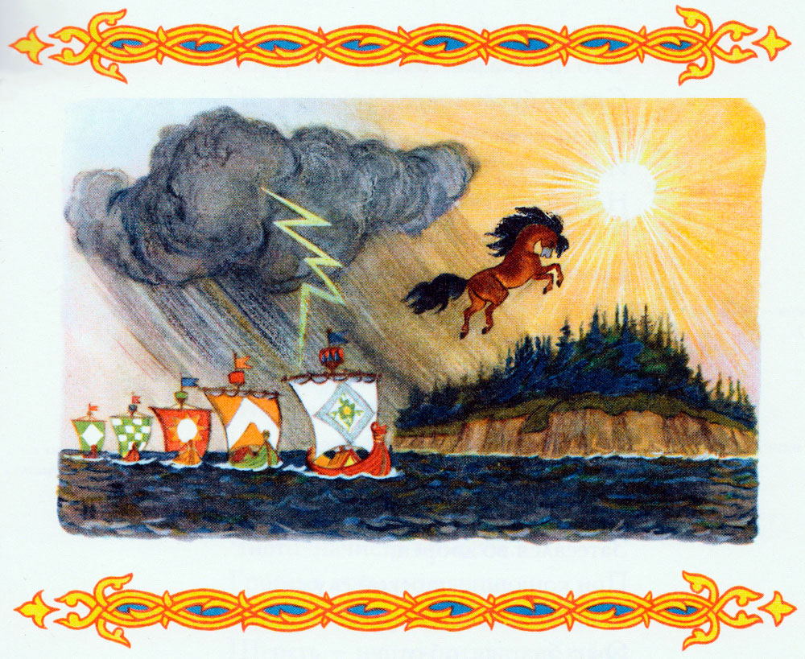
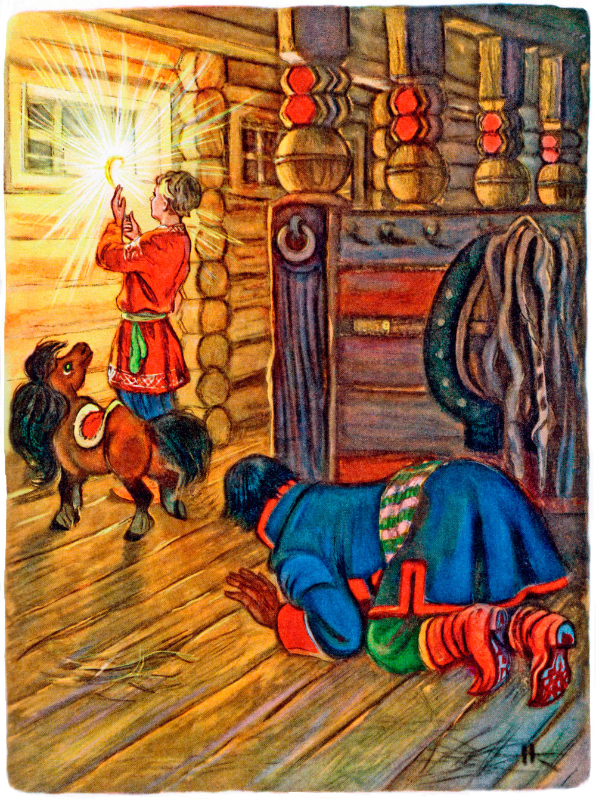

Конёк-горбунок. Часть 2. Скоро сказка сказывается, а не скоро дело делается.
Петр ЕршовЗачинается рассказ
От Ивановых проказ,
И от сивка, и от бурка,
И от вещего коурка.
Козы на море ушли;
Горы лесом поросли;

Конь с златой узды срывался,
Прямо к солнцу поднимался;
Лес стоячий под ногой,
Сбоку облак громовой;
Ходит облак и сверкает,
Гром по небу рассыпает.
Это присказка: пожди,
Сказка будет впереди.
Как на море-окияне
И на острове Буяне
Новый гроб в лесу стоит,
В гробе девица лежит;
Соловей над гробом свищет;
Черный зверь в дубраве рыщет,
Это присказка, а вот -
Сказка чередом пойдет.
Ну, так видите ль, миряне,
Православны христиане,
Наш удалый молодец
Затесался во дворец;
При конюшне царской служит
И нисколько не потужит
Он о братьях, об отце
В государевом дворце.
Да и что ему до братьев?
У Ивана красных платьев,
Красных шапок, сапогов
Чуть не десять коробов;
Ест он сладко, спит он столько,
Что раздолье, да и только!
Вот неделей через пять
Начал спальник примечать...
Надо молвить, этот спальник
До Ивана был начальник
Над конюшней надо всей,
Из боярских слыл детей;
Так не диво, что он злился
На Ивана и божился,
Хоть пропасть, а пришлеца
Потурить вон из дворца.
Но, лукавство сокрывая,
Он для всякого случая
Притворился, плут, глухим,
Близоруким и немым;
Сам же думает: "Постой-ка,
Я те двину, неумойка!"
Так неделей через пять
Спальник начал примечать,
Что Иван коней не холит,
И не чистит, и не школит;
Но при всем том два коня
Словно лишь из-под гребня:
Чисто-начисто обмыты,
Гривы в косы перевиты,
Челки собраны в пучок,
Шерсть - ну, лоснится, как шелк;
В стойлах - свежая пшеница,
Словно тут же и родится,
И в чанах больших сыта
Будто только налита.
"Что за притча тут такая? -
Спальник думает вздыхая. -
Уж не ходит ли, постой,
К нам проказник-домовой?
Дай-ка я подкараулю,
А нешто, так я и пулю,
Не смигнув, умею слить,-
Лишь бы дурня уходить.
Донесу я в думе царской,
Что конюший государской -
Басурманин, ворожей,
Чернокнижник и злодей;
Что он с бесом хлеб-соль водит,
В церковь божию не ходит,
Католицкий держит крест
И постами мясо ест".
В тот же вечер этот спальник,
Прежний конюших начальник,
В стойлы спрятался тайком
И обсыпался овсом.

Вот и полночь наступила.
У него в груди заныло:
Он ни жив ни мертв лежит,
Сам молитвы все творит.
Ждет суседки... Чу! в сам-деле,
Двери глухо заскрыпели,
Кони топнули, и вот
Входит старый коновод.
Дверь задвижкой запирает,
Шапку бережно скидает,
На окно ее кладет
И из шапки той берет
В три завернутый тряпицы
Царский клад - перо Жар-птицы.
Свет такой тут заблистал,
Что чуть спальник не вскричал,
И от страху так забился,
Что овес с него свалился.
Но суседке невдомек!
Он кладет перо в сусек,
Чистить коней начинает,
Умывает, убирает,
Гривы длинные плетет,
Разны песенки поет.
А меж тем, свернувшись клубом,
Поколачивая зубом,
Смотрит спальник, чуть живой,
Что тут деет домовой.
Что за бес! Нешто нарочно
Прирядился плут полночный:
Нет рогов, ни бороды,
Ражий парень, хоть куды!
Волос гладкий, сбоку ленты,
На рубашке прозументы,
Сапоги как ал сафьян, -
Ну, точнехонько Иван.
Что за диво? Смотрит снова
Наш глазей на домового...
"Э! так вот что! - наконец
Проворчал себе хитрец, -
Ладно, завтра ж царь узнает,
Что твой глупый ум скрывает.
Подожди лишь только дня,
Будешь помнить ты меня!"
А Иван, совсем не зная,
Что ему беда такая
Угрожает, все плетет
Гривы в косы да поет.
А убрав их, в оба чана
Нацедил сыты медвяной
И насыпал дополна
Белоярова пшена.
Тут, зевнув, перо Жар-птицы
Завернул опять в тряпицы,
Шапку под ухо - и лег
У коней близ задних ног.
Только начало зориться,
Спальник начал шевелиться,
И, услыша, что Иван
Так храпит, как Еруслан,
Он тихонько вниз слезает
И к Ивану подползает,
Пальцы в шапку запустил,
Хвать перо - и след простыл.
Царь лишь только пробудился,
Спальник наш к нему явился,
Стукнул крепко об пол лбом
И запел царю потом:
"Я с повинной головою,
Царь, явился пред тобою,
Не вели меня казнить,
Прикажи мне говорить". -
"Говори, не прибавляя, -
Царь сказал ему зевая.
Если ж ты да будешь врать,
То кнута не миновать".
Спальник наш, собравшись с силой,
Говорит царю: "Помилуй!
Вот те истинный Христос,
Справедлив мой, царь, донос.
Наш Иван, то всякий знает,
От тебя, отец скрывает,
Но не злато, не сребро -
Жароптицево перо..." -
"Жароптицево?.. Проклятый!
И он смел такой богатый...
Погоди же ты, злодей!
Не минуешь ты плетей!.." -
"Да и то ль еще он знает! -
Спальник тихо продолжает
Изогнувшися. - Добро!
Пусть имел бы он перо;
Да и самую Жар-птицу
Во твою, отец, светлицу,
Коль приказ изволишь дать,
Похваляется достать".
И доносчик с этим словом,
Скрючась обручем таловым,
Ко кровати подошел,
Подал клад - и снова в пол.

Царь смотрел и дивовался,
Гладил бороду, смеялся
И скусил пера конец.
Тут, уклав его в ларец,
Закричал (от нетерпенья),
Подтвердив свое веленье
Быстрым взмахом кулака:
"Гей! позвать мне дурака!"
И посыльные дворяна
Побежали по Ивана,
Но, столкнувшись все в углу,
Растянулись на полу.
Царь тем много любовался
И до колотья смеялся.
А дворяна, усмотря,
Что смешно то для царя,
Меж собой перемигнулись
И вдругоредь растянулись.
Царь тем так доволен был,
Что их шапкой наградил.
Тут посыльные дворяна
Вновь пустились звать Ивана
И на этот уже раз
Обошлися без проказ.
Вот к конюшне прибегают,
Двери настежь отворяют
И ногами дурака
Ну толкать во все бока.
С полчаса над ним возились,
Но его не добудились.
Наконец уж рядовой
Разбудил его метлой.
"Что за челядь тут такая? -
Говорит Иван вставая. -
Как хвачу я вас бичом,
Так не станете потом
Без пути будить Ивана".
Говорят ему дворяна:
"Царь изволил приказать
Нам тебя к нему позвать". -
"Царь?.. Ну ладно! Вот сряжуся
И тотчас к нему явлюся", -
Говорит послам Иван.
Тут надел он свой кафтан,
Опояской подвязался,
Приумылся, причесался,
Кнут свой сбоку прицепил,
Словно утица поплыл.
Вот Иван к царю явился,
Поклонился, подбодрился,
Крякнул дважды и спросил:
"А пошто меня будил?"
Царь, прищурясь глазом левым,
Закричал к нему со гневом,
Приподнявшися: "Молчать!
Ты мне должен отвечать:
В силу коего указа
Скрыл от нашего ты глаза
Наше царское добро -
Жароптицево перо?
Что я - царь али боярин?
Отвечай сейчас, татарин!"
Тут Иван, махнув рукой,
Говорит царю: "Постой!
Я те шапки ровно не дал,
Как же ты о том проведал?
Что ты - ажно ты пророк?
Ну, да что, сади в острог,
Прикажи сейчас хоть в палки -
Нет пера, да и шабалки!.." -
"Отвечай же! запорю!.." -
"Я те толком говорю:
Нет пера! Да, слышь, откуда
Мне достать такое чудо?"
Царь с кровати тут вскочил
И ларец с пером открыл.
"Что? Ты смел еще переться?
Да уж нет, не отвертеться!
Это что? А?" Тут Иван
Задрожал, как лист в буран,
Шапку выронил с испуга.
"Что, приятель, видно, туго? -
Молвил царь. - Постой-ка, брат!.." -
"Ох, помилуй, виноват!
Отпусти вину Ивану,
Я вперед уж врать не стану".
И, закутавшись в полу,
Растянулся на полу.
"Ну, для первого случаю
Я вину тебе прощаю, -
Царь Ивану говорит. -
Я, помилуй бог, сердит!
И с сердцов иной порою
Чуб сниму и с головою.
Так вот, видишь, я каков!
Но, сказать без дальних слов,
Я узнал, что ты Жар-птицу
В нашу царскую светлицу,
Если б вздумал приказать,
Похваляешься достать.
Ну, смотри ж, не отпирайся
И достать ее старайся".
Тут Иван волчком вскочил.
"Я того не говорил! -
Закричал он утираясь. -
О пере не запираюсь,
Но о птице, как ты хошь,
Ты напраслину ведешь".
Царь, затрясши бородою:
"Что? Рядиться мне с тобою! -
Закричал он. - Но смотри,
Если ты недели в три
Не достанешь мне Жар-птицу
В нашу царскую светлицу,
То, клянуся бородой,
Ты поплатишься со мной:
На правеж - в решетку - на кол!

Вон, холоп!" Иван заплакал
И пошел на сеновал,
Где конек его лежал.

Горбунок, его почуя,
Дрягнул было плясовую;
Но, как слезы увидал,
Сам чуть-чуть не зарыдал.
"Что, Иванушка, невесел?
Что головушку повесил? -
Говорит ему конек,
У его вертяся ног. -
Не утайся предо мною,
Все скажи, что за душою.
Я помочь тебе готов.
Аль, мой милый, нездоров?
Аль попался к лиходею?"
Пал Иван к коньку на шею,
Обнимал и целовал.
"Ох, беда, конек! - сказал. -
Царь велит достать Жар-птицу
В государскую светлицу.
Что мне делать, горбунок?"
Говорит ему конек:
"Велика беда, не спорю;
Но могу помочь я горю.
Оттого беда твоя,
Что не слушался меня:
Помнишь, ехав в град-столицу,
Ты нашел перо Жар-птицы;
Я сказал тебе тогда:
Не бери, Иван, - беда!
Много, много непокою
Принесет оно с собою.
Вот теперя ты узнал,
Правду ль я тебе сказал.
Но, сказать тебе по дружбе,
Это - службишка, не служба;
Служба все, брат, впереди.
Ты к царю теперь поди
И скажи ему открыто:
"Надо, царь, мне два корыта
Белоярова пшена
Да заморского вина.
Да вели поторопиться:
Завтра, только зазорится,
Мы отправимся, в поход".
Вот Иван к царю идет,
Говорит ему открыто:
"Надо, царь, мне два корыта
Белоярова пшена
Да заморского вина.
Да вели поторопиться:
Завтра, только зазорится,
Мы отправимся в поход".
Царь тотчас приказ дает,
Чтоб посыльные дворяна
Все сыскали для Ивана,
Молодцом его назвал
И "счастливый путь!" сказал.
На другой день, утром рано,
Разбудил конек Ивана:
"Гей! Хозяин! Полно спать!
Время дело исправлять!"

Вот Иванушка поднялся,
В путь-дорожку собирался,
Взял корыта, и пшено,
И заморское вино;
Потеплее приоделся,
На коньке своем уселся,
Вынул хлеба ломоток
И поехал на восток -
Доставать тое Жар-птицу.
Едут целую седмицу,
Напоследок, в день осьмой,
Приезжают в лес густой.
Тут сказал конек Ивану:
"Ты увидишь здесь поляну;
На поляне той гора
Вся из чистого сребра;
Вот сюда то до зарницы
Прилетают жары-птицы
Из ручья воды испить;
Тут и будем их ловить".
И, окончив речь к Ивану,
Выбегает на поляну.
Что за поле! Зелень тут
Словно камень-изумруд;
Ветерок над нею веет,
Так вот искорки и сеет;
А по зелени цветы
Несказанной красоты.
А на той ли на поляне,
Словно вал на океане,
Возвышается гора
Вся из чистого сребра.
Солнце летними лучами
Красит всю ее зарями,
В сгибах золотом бежит,
На верхах свечой горит.
Вот конек по косогору
Поднялся на эту гору,
Версту, другу пробежал,
Устоялся и сказал:
"Скоро ночь, Иван, начнется,
И тебе стеречь придется.
Ну, в корыто лей вино
И с вином мешай пшено.
А чтоб быть тебе закрыту,
Ты под то подлезь корыто,
Втихомолку примечай,
Да, смотри же, не зевай.
До восхода, слышь, зарницы
Прилетят сюда жар-птицы
И начнут пшено клевать
Да по-своему кричать.
Ты, которая поближе,
И схвати ее, смотри же!
А поймаешь птицу-жар,
И кричи на весь базар;
Я тотчас к тебе явлюся".-
"Ну, а если обожгуся?-
Говорит коньку Иван,
Расстилая свой кафтан. -
Рукавички взять придется:
Чай, плутовка больно жгется".
Тут конек из глаз исчез,
А Иван, кряхтя, подлез
Под дубовое корыто
И лежит там как убитый.
Вот полночною порой
Свет разлился над горой, -
Будто полдни наступают:
Жары-птицы налетают;
Стали бегать и кричать
И пшено с вином клевать.
Наш Иван, от них закрытый,
Смотрит птиц из-под корыта
И толкует сам с собой,
Разводя вот так рукой:
"Тьфу ты, дьявольская сила!
Эк их, дряней, привалило!
Чай, их тут десятков с пять.
Кабы всех переимать, -
То-то было бы поживы!
Неча молвить, страх красивы!
Ножки красные у всех;
А хвосты-то - сущий смех!
Чай, таких у куриц нету.
А уж сколько, парень, свету,
Словно батюшкина печь!"
И, скончав такую речь,
Сам с собою под лазейкой,
Наш Иван ужом да змейкой
Ко пшену с вином подполз, -
Хвать одну из птиц за хвост.

"Ой, Конечек-горбуночек!
Прибегай скорей, дружочек!
Я ведь птицу-то поймал", -
Так Иван-дурак кричал.
Горбунок тотчас явился.
"Ай, хозяин, отличился! -
Говорит ему конек. -
Ну, скорей ее в мешок!
Да завязывай тужее;
А мешок привесь на шею.
Надо нам в обратный путь". -
"Нет, дай птиц-то мне пугнуть!
Говорит Иван. - Смотри-ка,
Вишь, надселися от крика!"
И, схвативши свой мешок,
Хлещет вдоль и поперек.
Ярким пламенем сверкая,
Встрепенулася вся стая,
Кругом огненным свилась
И за тучи понеслась.
А Иван наш вслед за ними
Рукавицами своими
Так и машет и кричит,
Словно щелоком облит.
Птицы в тучах потерялись;
Наши путники собрались,
Уложили царский клад
И вернулися назад.
Вот приехали в столицу.
"Что, достал ли ты Жар-птицу?" -
Царь Ивану говорит,
Сам на спальника глядит.
А уж тот, нешто от скуки,
Искусал себе все руки.
"Разумеется, достал", -
Наш Иван царю сказал.
"Где ж она?" - "Постой немножко,
Прикажи сперва окошко
В почивальне затворить,
Знашь, чтоб темень сотворить".
Тут дворяна побежали
И окошко затворяли.
Вот Иван мешок на стол:
"Ну-ка, бабушка, пошел!"

Свет такой тут вдруг разлился,
Что весь двор рукой закрылся.
Царь кричит на весь базар:
"Ахти, батюшки, пожар!
Эй, решеточных сзывайте!
Заливайте! Заливайте!" -
"Это, слышь ты, не пожар,
Это свет от птицы-жар, -
Молвил ловчий, сам со смеху
Надрываяся. - Потеху
Я привез те, осударь!"
Говорит Ивану царь:
"Вот люблю дружка Ванюшу!
Взвеселил мою ты душу,
И на радости такой -
Будь же царский стремянной!"
Это видя, хитрый спальник,
Прежний конюших начальник,
Говорит себе под нос:
"Нет, постой, молокосос!
Не всегда тебе случится
Так канальски отличиться.
Я те снова подведу,
Мой дружочек, под беду!"
Продолжение следует.